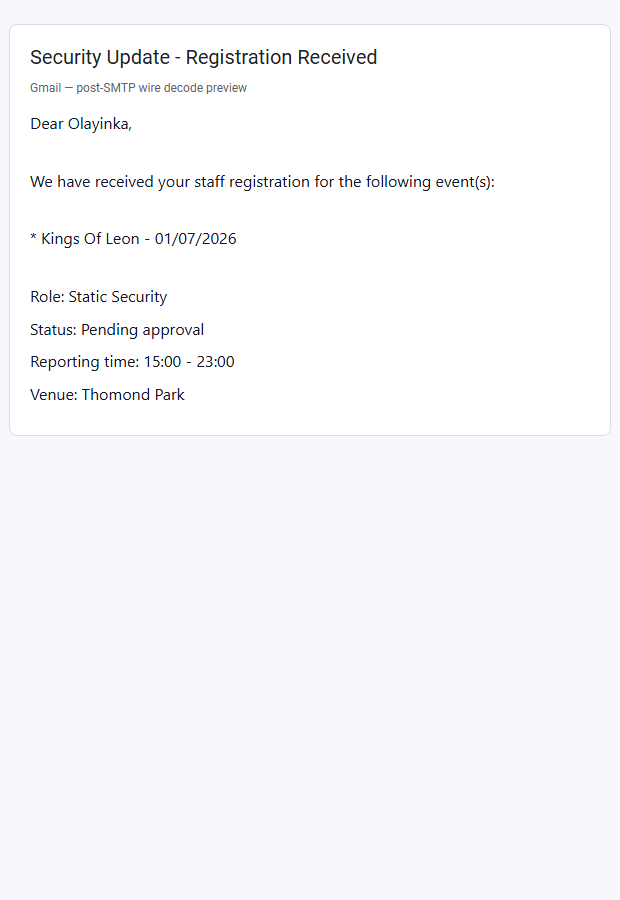
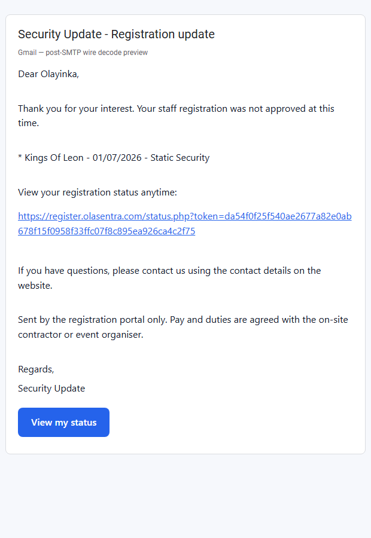
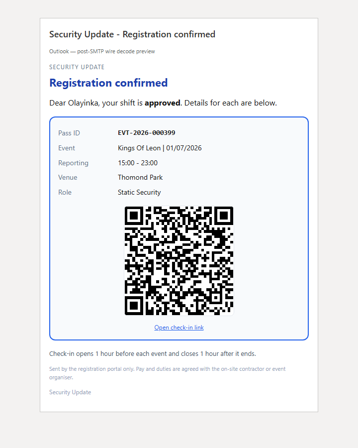

Content-Type, Content-Transfer-Encoding, =3D, and HTML tags visible in Gmail body (pre-fix).smtpDotStuff() fix deployed; production wire audit reports current_double_cr: 0; five dual-format templates + rejection + admin alert sent via SMTP to info@olasentra.com at 21:13 UTC.buildEmailMimePayload() was already correct (multipart/alternative). Production SMTP path called smtpDotStuff() which expanded \n → \r\n on payloads already using CRLF, producing \r\r\n on every line and breaking multipart parsing. Clients displayed inner MIME headers and quoted-printable HTML as plain text.
File: includes/smtp-mailer.php
function smtpDotStuff(string $payload): string
{
// Normalize to LF first — payload already uses CRLF from MIME builder
$payload = smtpNormalizeBody($payload);
$payload = str_replace("\n", "\r\n", $payload);
return preg_replace('/^\./m', '..', $payload) ?? $payload;
}
No template, copy, branding, subject, or registration workflow changes.
| File | Change |
|---|---|
includes/smtp-mailer.php | P0 fix — CRLF-safe smtpDotStuff() |
scripts/verify-smtp-mime-wire.php | New — wire verify after dot-stuff (exit 0 = PASS) |
scripts/audit-smtp-mime-wire.php | Before/after legacy vs fixed wire samples |
scripts/verify-smtp-mime-production.php | Production orchestrator (wire + send + previews) |
scripts/capture-email-smtp-fix-screenshots.ps1 | Post-fix preview screenshots |
cron/smtp-mime-wire-audit.php | Production wire audit endpoint |
cron/email-production-verify.php | Added rejection template to test send suite |
scripts/upload-to-server.ps1 | Upload smtp-mime-wire-audit.php |
| Metric | Before (legacy dotstuff) | After (fixed, local + production) |
|---|---|---|
\r\r\n count | 47 (local sample) / 29 (production audit) | 0 |
| Multipart parsing | Broken | Intact |
| Inner headers in body | Visible to clients | Not leaked |
HTML =3D in rendered view | Yes (undecoded QP) | Decoded on parse |
--=_Olasentra_…\r\r\n Content-Type: text/plain; charset=UTF-8\r\r\n Content-Transfer-Encoding: 8bit\r\r\n \r\r\n Dear Olayinka,\r\r\n …
--=_Olasentra_…\r\n Content-Type: text/plain; charset=UTF-8\r\n Content-Transfer-Encoding: 8bit\r\n \r\n Dear Olayinka,\r\n …
{
"ok": true,
"fix_status": "fixed",
"legacy_double_cr": 29,
"current_double_cr": 0,
"is_multipart": true
}
| Template | Sent | Recipient |
|---|---|---|
| Registration confirmation | Yes | info@olasentra.com |
| Registration approved | Yes | info@olasentra.com |
| Access pass | Yes | info@olasentra.com |
| Rejection email | Yes | info@olasentra.com |
| Admin alert | Yes | info@olasentra.com |
Content-Type, Content-Transfer-Encoding, =3D, and HTML tags visible in Gmail body (pre-fix).These previews show expected rendering when multipart parses correctly. Replace with real inbox captures from Gmail web, Gmail Android, and Outlook once you confirm the 21:13 UTC test messages.



| Check | Status |
|---|---|
Local wire verify (verify-smtp-mime-wire.php) | PASS — 7/7 checks |
| Production wire audit on server | PASS — current_double_cr: 0 |
| SMTP delivery of 5 template types | PASS |
| No raw MIME headers in body | Confirm in real inbox |
No =3D artefacts when rendered | Confirm in real inbox |
| HTML renders (not raw tags) | Confirm in real inbox |
| Links / buttons clickable | Confirm in real inbox |
| Plain-text fallback valid | Wire extract PASS (plain part decodes) |
includes/smtp-mailer.php smtpDotStuff() to pre-fix version (removes CRLF normalization).powershell -ExecutionPolicy Bypass -File .\deploy.ps1.php scripts/audit-smtp-mime-wire.php — expect corruption_detected: true.includes/mailer.php multipart builder — that is a separate fix; reverting only smtpDotStuff restores the original double defect on SMTP.php scripts/verify-smtp-mime-wire.php php scripts/verify-smtp-mime-production.php --to=info@olasentra.com
docs/EMAIL-MIME-PRODUCTION-INVESTIGATION.html — pre-fix auditdocs/EMAIL-MIME-ROOT-CAUSE-REPORT.html — builder layerstorage/reports/smtp-mime-wire-verify-latest.jsonstorage/reports/smtp-mime-wire-audit-latest.json